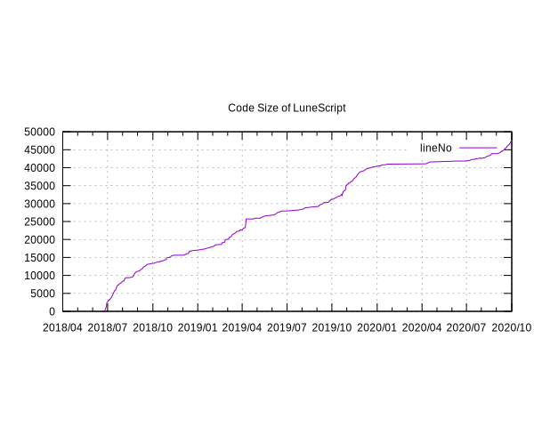

これまでの LuneScript のコード規模の推移を調べてみた。

これは単純に LuneScript をセルフホストしている .lns ファイルの行数をトータルした結果。 よって、コメントや空行等も入っている。
2020年前半はさぼってたけど、それ以外はコンスタントに成長している感じ。
参考までに、このグラフを作った gnuplot スクリプト。 1列目に YYYY-MM-DD の日付データ、2列目に行数データの dump.csv からデータをロードして、 codesize.svg を出力する。
file='dump'
se g
se xdata time
se timefmt "%Y-%m-%d"
se datafile separator ","
se format x "%Y/%m"
se title 'Code Size of LuneScript'
set xtics rotate by -45
se terminal svg
se output 'codesize.svg'
p file u 1:2 w l title "lineNo"
#pause -1